As part of the Commerce Data Usability Project, the Commerce Data Service held a Summer Internship for high school students in 2016. This is the culmination of a research project conducted by 2 summer associates of that program under Chief Data Scientist Jeff Chen. If you have questions, feel free to reach out to the Commerce Data Service at DataUsability@doc.gov
Atmospheric Data is a Digital Representation of the Living Environment.
In 2016, NASA released a 3-D visualization that captured the patterns of carbon dioxide in the atmosphere. Through various ground sensors, scientists showed the rising concentrations of carbon dioxide throughout the globe. Because of an intense increase in the burning of fossil fuels for energy, greenhouse gases have also risen in concentration, warming the Earth's atmosphere day by day. Scientists believe that a quarter of these emissions are being absorbed by the ocean, and have the potential to kill microorganisms that are the basis of aquatic and land ecosystems. One essential organism in danger is phytoplankton. As a primary producer in the ocean, phytoplankton are responsible for cycling carbon dioxide to regions from the atmosphere to the depths of the ocean for other organisms to feed off and reproduce (Lindsey, 2010). These creatures also heavily impact the carbon cycle and surface temperatures.
We were curious to see if any relationship existed between these two inversely related events. In reviewing the research, we have found that a) temperature levels have risen over the past 30 years, and b) phytoplankton levels have decreased over the last 40 years (Biello, 2010). Our goal was to correlate this data to suggest that an effort be made towards increasing algal phytoplankton blooms in oceans for a decrease in carbon dioxide, leading to cooler temperatures for the atmosphere. Ultimately, after performing regressions on the data, we could determine that it is possible to predict Chlorophyll levels based on temperature to a certain degree of accuracy.
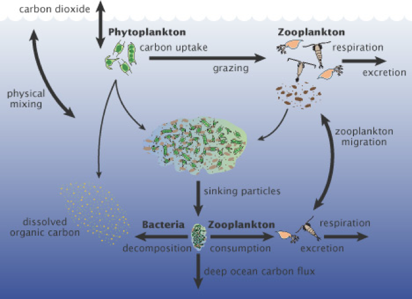
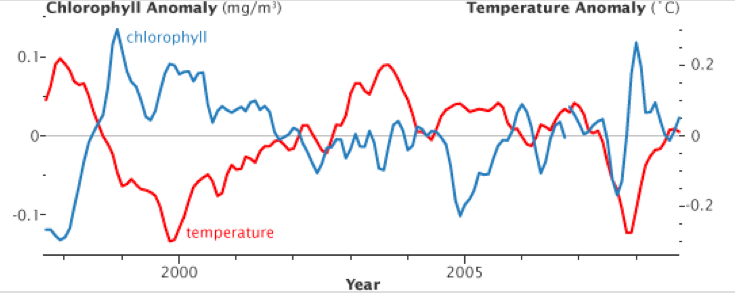
Data as a public good
Our tutorial was developed mostly through HTML and JavaScript. CSS design files were integrated with the application that we developed to maintain the style of the websites that CDS publishes. Ultimately, we developed simpler graphs within our Python program using MatPlotLib, and included images of those graphs in our tutorial.
Next, we selected specific regions of data that we were going to analyze, each region consisting of 16 coordinate points in the shape of either a square or a rectangle (ultimately, we would like to analyze every data point in the ocean using GIS Shapefiles to select geographic regions, but since time was a limitation, we chose not to do so). We chose three locations in which the levels of phytoplankton would vary enough to provide a generalization of the trends that occur in oceans.
- Since phytoplankton levels decrease farther away from the coast, our first region was in the middle of the Atlantic Ocean, where the Chlorophyll levels were almost 0.
- Next, we chose to analyze a region in the Mediterranean Sea, as it had medium levels of Chlorophyll.
- Finally, our last region was near the coast of Argentina, where an abundance of Chlorophyll was present in the ocean.
We determined these regions based on latitude and longitude coordinates, by outlining the areas on a map and converting the coordinates into sets of indices that could select certain data from the overall datasets.
After we chose the points that we wanted to analyze, we obtained the Chlorophyll and temperature values for each point from our datasets. We then stored each of these time series in Numpy arrays, which are structures that are useful in accessing large lengths of data. After doing so, we plotted the Chlorophyll levels against the temperature values, to accurately represent and visualize the relationships between the two variables. These graphs, which were coded using the MatPlotLib PyPlot library in Python, are shown below:
Getting Started
The data that we used was downloaded from an online NASA satellite database: we selected Chlorophyll and sea surface temperature datasets for each month from 2003 to 2015. Each dataset was in the form of netCDF. This datatype was not intuitive to use, and so we employed the netCDF4 Python module to be able to read and access data. Once we stored the datasets locally, we referenced various netCDF and specific NASA APIs to familiarize ourselves with the format and structure of the data.
To get started with the data, this tutorial illustrates how to replicate the analysis done for the three regions of Chlorophyll vs. Sea Surface Temperature. For reference to the data from NASA, please visit the Chlorophyll or Sea Surface Temperature Data.
Part 1: Preliminaries
First, you need to import the following libraries:
- netCDF4. A Python interface to the netCDF library.
- numpy. An extremely powerful data storage package that is beneficial when working with large, local datasets. .
- matplotlib. Helpful to create visualizations and outline trends in datasets.
- scipy. A library that contains modules for technical and mathematical computing.
#from scipy.io.netcdf import netcdf_file as Dataset
from netCDF4 import Dataset
import numpy as np
import numpy.fft as fft
import os
import matplotlib.pyplot as plt
import math
from scipy import stats
from scipy.optimize import curve_fit
from scipy.optimize import leastsq
from scipy.signal import correlate
#from scipy import optimize
import jsonPart 2: Understanding the Data
According to NEO NASA, the Sea Surface Temperature Data provides temperature levels at 1km, 4.6 km, and 36 km resolutions over the Earth's oceans. Measurements from the Moderate Resolution Imaging Spectroradiometer (MODIS) instruments measure the "warmth of the ocean's "skin" (top millimeter)".
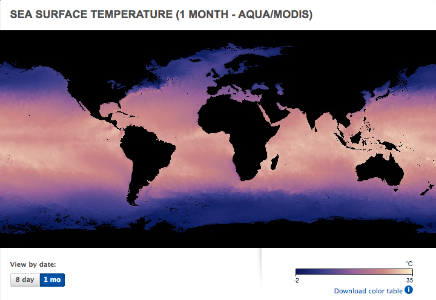
The Chlorophyll Data from NEO NASA is measured at a 1 km resolution, restricted to clear water with daily coverage via the MODIS instruments on NASA's Terra and Aqua satellites.
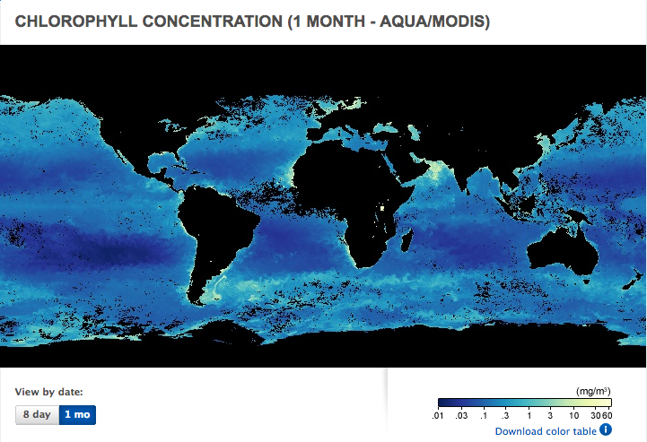
To learn more about this dataset in depth, please visit NEO NASA's Earth Observations for Chlorophyll or Sea Surface Temperature Data.
Part 2.1: Methods
These are the methods to get the Latitude, Longitude, Chlorophyll and Temperature data.
def getLatLong(lats, lons, actualLat, actualLon): #determine lat/long given indeces in array
lonPlace = float("inf")
lonsCount = 0
for thing in lons:
if (math.fabs(thing-actualLon) < 0.1):
lonPlace = lonsCount
break
lonsCount += 1
latPlace = float("inf")
latsCount = 0
for thing in lats:
if (math.fabs(thing-actualLat) < 0.1):
latPlace = latsCount
break
latsCount += 1
return (lonPlace, latPlace)def getChlorophyllData(latitude, longitude, chloroFiles): #store chlorophyll data for given location in array
chloroList = []
for chloras in chloroFiles:
value = chloras[longitude][latitude]
chloroList.append(value)
return (chloroList)def getTemperatureData(latitude, longitude, tempFiles): #store temperature data for given location in array
tempList = []
for temps in tempFiles:
value = temps[longitude][latitude]
tempList.append(value)
return (tempList)def getDataFromRange(latOne, latTwo, lonOne, lonTwo, chloroFiles, tempFiles, lons, lats):
allChloroList = []
allTempList = []
for lat in range(latOne, latTwo):
for lon in range(lonOne,lonTwo):
(mylatitude, mylongitude) = getLatLong(lats,lons,lat,lon)
chloroList = getChlorophyllData(mylatitude, mylongitude, chloroFiles)
tempList = getTemperatureData(mylatitude, mylongitude, tempFiles)
allChloroList.extend(chloroList)
allTempList.extend(tempList)
actualAllChloro = []
actualAllTemp = []
timeseries = []
for i in range(len(allChloroList)):
if not (allChloroList[i] is np.ma.masked or allTempList[i] is np.ma.masked):
actualAllChloro.append(allChloroList[i])
actualAllTemp.append(allTempList[i])
timeseries.append(i)
"""allChloroList=[]
allTempList=[]
for i in range(len(actualAllTemp)):
if not (actualAllTemp[i]is np.ma.masked):
allTempList.append(actualAllTemp[i])
allChloroList.append(actualAllChloro[i])"""
return (actualAllChloro, actualAllTemp, timeseries)def getAllFiles(): #initiate data files
chloroFiles = []
count = 0
for chloroFile in os.listdir('chlorophyllData'):
chloroFilename = "chlorophyllData/" + str(chloroFile)
chloroData = Dataset(chloroFilename, mode="r")
if count == 0:
lons = chloroData.variables['lon'][:]
lats = chloroData.variables['lat'][:]
#lons = chloroData.variables['lon'][:]
#lats = chloroData.variables['lat'][:]
chloras = chloroData.variables['chlor_a'][:]
chloroFiles.append(chloras)
print (count)
count += 1
tempFiles = []
count = 0
for tempFile in os.listdir('temperatureData'):
tempFilename = "temperatureData/" + str(tempFile)
tempData = Dataset(tempFilename, mode="r")
#lons = tempData.variables['lon'][:]
#lats = tempData.variables['lat'][:]
temps = tempData.variables['sst'][:]
tempFiles.append(temps)
print (count)
count += 1
return (chloroFiles, tempFiles, lons, lats)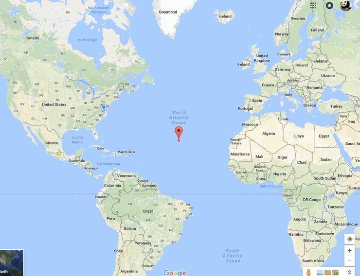
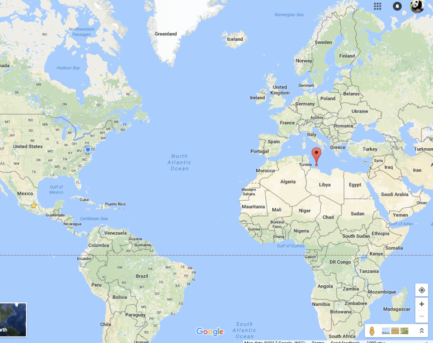
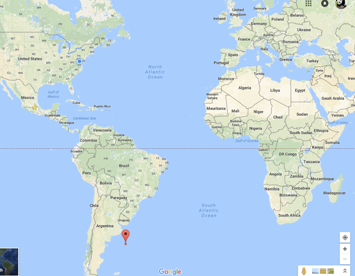
Part 2.2: Plot Data
We had to find a way to uniquely store data and make a visualization to plot the points. The visualization, a simple graph created through cv2 module in Python, contains points for sea surface temperature and chlorophyll levels for each time period (every month since January 2003).This graph will serve two purposes: it allows us to make sure that the data was entered into the Numpy arrays correctly, and it will help decide what type of statistical analysis technique to use.
To create the graph, we stored the chlorophyll and temperature values at that point for each month over three years in an array, and graphed the array using Pyplot. From the graph, we could see that both variables were sinusoidal because they vary depending on the season. Furthermore, they were inverses of each other: when temperatures were higher, chlorophyll levels were lower, and vice versa. However, the trends of chlorophyll had a much less definitive sinusoidal relationship, as they varied within their overall sinusoidal shapes.
#SET STYLE OF MATPLOTLIB GRAPH
plt.style.use('ggplot')
#PLOT OF CHLOROPHYLL VS. TIME (MIDDLE OF OCEAN)
plt.plot(allChloroList1, linestyle='-', color='g')
plt.xlabel("Time (Months Since January 2003)")
plt.ylabel("Chlorophyll Levels (mg/m^3)")
plt.suptitle("Chlorophyll Levels Monthly Over the Course of 12 Years")
plt.figure()
#PLOT OF TEMPERATURE VS. TIME (MIDDLE OF OCEAN)
plt.plot(allTempList1, linestyle='-', color='r')
plt.xlabel("Time (Months Since January 2003)")
plt.ylabel("Sea Surface Temperature (Degrees Celcius)")
plt.suptitle("Sea Surface Temperature Monthly Over the Course of 12 Years")
plt.figure()
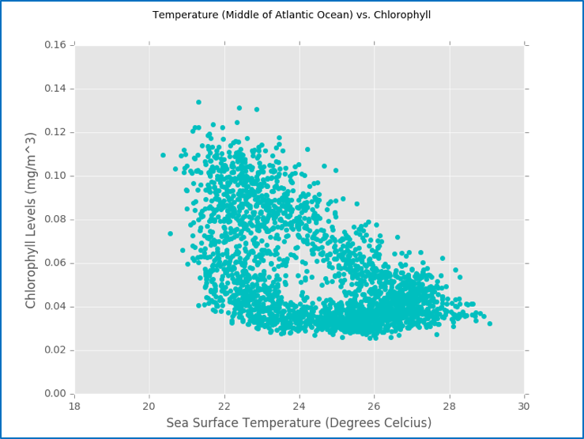
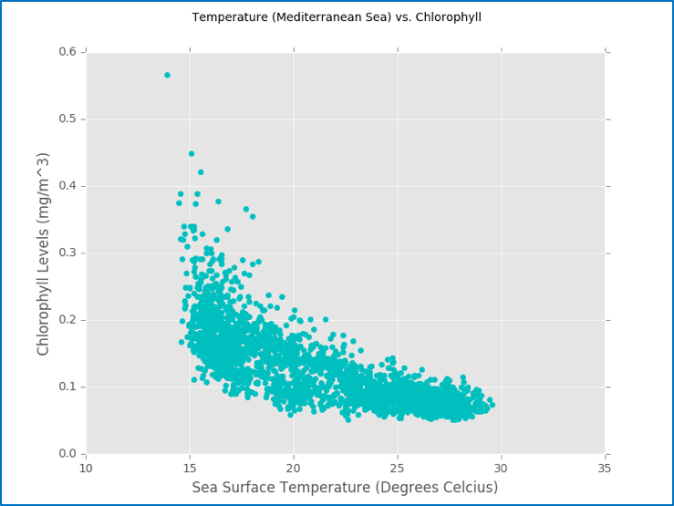
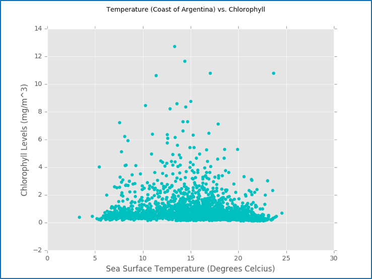
Part 2.3: Plot Regression over Data
Because of this triangular trend, we predicted that although a linear regression would not accurately fit the scatter plot, the residuals from each point to that regression line would form a harmonic, oscillating pattern that would be neatly modeled through a sinusoidal regression. Therefore, we conducted the linear regression (Figure 9) on each of the 3 regions using the SciPy package in Python. Next, we iterated through each point and calculated its residual with the regression that we conducted. We stored these residuals in a time series plot, and as we predicted, they maintained a harmonic trend (Figure 10). After performing a harmonic regression on the residual plot, we had an accurate approximation of the error from the linear regression for each point. These regressions are outlined in the visualizations below, which demonstrate the linear regression on Chlorophyll and temperature data in the Atlantic Ocean, followed by a harmonic regression on the residuals of the data.
#PERFORM LINEAR REGRESSION ON DATA
regression1 = np.polyfit(allTempList1, allChloroList1, deg=1)
#PLOT LINEAR REGRESSION
plt.plot(allTempList1, regression1[0]*allTempList1+regression1[1], linewidth='5')
#PLOTTED ON TOP OF SCATTER OF TEMPERATURE VS. CHLOROPHYLL
plt.scatter(allTempList1, allChloroList1, color='c')
plt.xlabel("Sea Surface Temperature (Degrees Celcius)")
plt.ylabel("Chlorophyll Levels (mg/m^3)")
plt.suptitle("Temperature (Middle of Atlantic Ocean) vs. Chlorophyll")
plt.figure()
#CALCULATE RESIDUALS (ERRORS OF LINEAR REGRESSION)
residualsArray1 = []
for i in range(len(allTempList1)):
if i==100:
break
actualValue = allChloroList1[i]
predictedValue = regression1[0]*allTempList1[i]+regression1[1]
residualValue = actualValue-predictedValue
#STORE RESIDUAL VALUES IN ARRAY
residualsArray1.append(residualValue)
#DETERMINE X AXIS FOR RESIDUAL DATA
timeseriesArray = []
timeseries1A = timeseries1.tolist()
for i in range(len(timeseries1A)):
if i==100:
break
timeseriesArray.append(timeseries1A[i])
residuals1 = np.array(residualsArray1)
timeseries1 = np.array(timeseriesArray)
#PERFORM HARMONIC REGRESSION ON RESIDUALS
countCrosses = 0
firstvalue = residuals1[0]
mean = np.mean(residuals1)
for value in range(1, len(residuals1)):
if firstvaluemean:
countCrosses+=1
firstvalue = residuals1[value]
print (countCrosses)
guess_freq = 2*np.pi*((countCrosses)/len(residuals1))
guess_amplitude = 3*np.std(residuals1)/(2**0.5)
guess_phase = 0
guess_offset = np.mean(residuals1)
p0=[guess_freq, guess_amplitude, guess_phase, guess_offset]
def my_sin(x, freq, amplitude, phase, offset):
return np.sin(freq * x + phase) * amplitude + offset
fit = curve_fit(my_sin, timeseries1, residuals1, p0=p0)
#DATA_FIT IS SIN WAVE MODEL FOR HARMONIC REGRESSION ON RESIDUALS
data_fit = my_sin(timeseries1, *fit[0])
#start comment here
n=len(residuals1)
result = correlate(residuals1[-(n-100):], residuals1[n-100:], mode='full')
period = 0
firstvalue = result[0]
mean = np.mean(result)
firstplace = -1
for value in range(1, len(result)):
if firstvaluemean:
if firstplace == -1:
firstplace = value
else:
period = value - firstplace
break
firstvalue = result[value]
frequency = 1/(period)
guess_amplitude = 3*np.std(residuals1)/(2**0.5)
guess_phase = 0
guess_offset = np.mean(residuals1)
p0=[guess_amplitude, guess_phase, guess_offset]
def my_sin(x, amplitude, phase, offset):
return np.sin(frequency * x + phase) * amplitude + offset
fit = curve_fit(my_sin, timeseries1, residuals1, p0=p0)
data_fit = my_sin(timeseries1, *fit[0])
#PLOT HARMONIC REGRESSION DATA ON TOP OF ACTUAL RESIDUAL VALUES
line_up, = plt.plot(data_fit, color = 'blue', label='Regression', linewidth='2')
line_down, = plt.plot(timeseries1, residuals1, label='Actual Residuals', linewidth='2')
plt.legend(handles=[line_up, line_down])
#plt.plot(result, color='red')
plt.xlabel("Time (Months, Only 100 For Sake of Visualization)")
plt.ylabel("Residual Values (mg/m^3)")
plt.suptitle("Residual Time Series of Scatter Plot")
plt.figure()
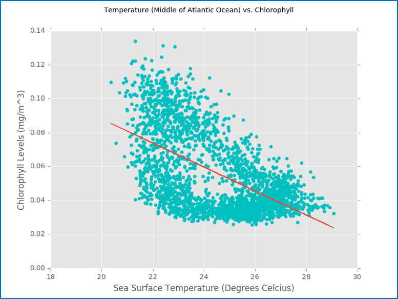
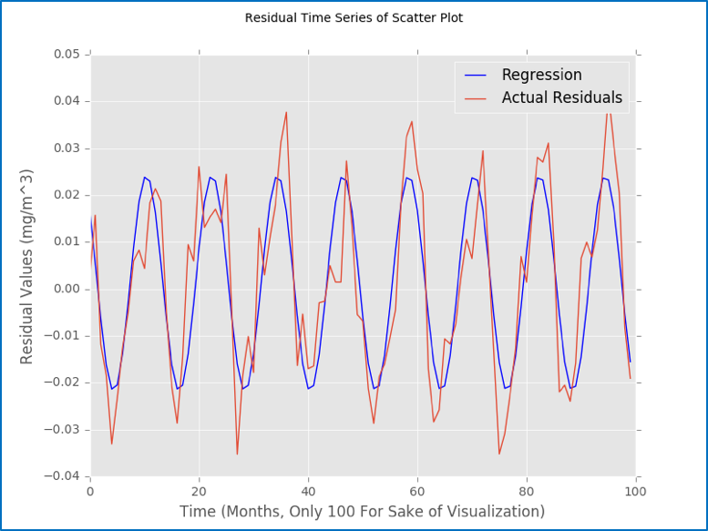
Part 3: Data Analysis and Conclusions
After speaking with our mentors, we discovered that one possibility may be that each "side" of the triangle shape that the graph was forming was one period in each year; the correlation spiraled around over each year, and ultimately formed a triangle-shaped region. Furthermore, in regions where the chlorophyll levels were higher (usually near coasts), this correlation was more varied, which would explain the graph being cut off at 0; although the data would still theoretically form a triangle, it was cut off because chlorophyll cannot go below 0. From these results, we started performing nonparametric analyses, specifically harmonic regressions, on the data. Since temperature and chlorophyll values alter over the year in a sort of sinusoidal pattern, harmonic regressions would allow us to view my data linearly, and remove variability caused by variation over seasons.
#DETERMINE ACCURACY OF MODEL
#CALCULATE PREDICTIONS THROUGH REGRESSIONS, AND PLOT AGAINST ACTUAL VALUES
allPoints1 = []
for value in allTempList1:
point = my_sin(value, *fit[0])
point += regression1[0]*value + regression1[1]
allPoints1.append(point)
plt.scatter(allTempList1, allChloroList1)
plt.scatter(allTempList1, allPoints1, color='r')
plt.show()
These regressions allowed us to achieve our goal of predicting values of Chlorophyll based on temperature values: to compute each Chlorophyll, value, we used the formula "Chlorophyll Level = Linear Regression Value + Error Value from Harmonic Regression". We confirmed the accuracy of this prediction by omitting certain points of Chlorophyll from our time series, and comparing our calculated predictions with these actual values.